How to compute perfect trajectories to win a billiard game
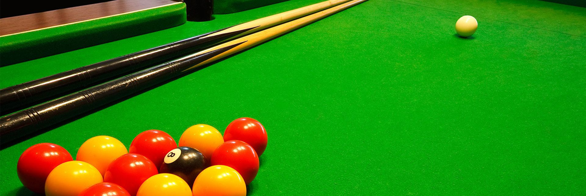
Many pool players, myself included, would dream of pocketing all the balls one after the other. However, because of the many parameters that govern the movement of the balls, this is difficult, but not impossible. So we're going to look for the perfect trajectory in billiards to find out "how to pocket a billiard ball for sure".
*Since we are trying to make trajectories as predictable as possible, we will consider in our study balls moving without effect, therefore in a straight line.
We will first focus on an experimental study of friction, then on the theoretical study of the $3$ main physical laws governing motion, and finally I will develop the design of computer programs that will allow us to determine the perfect trajectories to pocket a ball.
First of all, we will look at the friction of the ball with the mat, which is obviously the cause of the loss of speed of the ball. To study the evolution of this speed, I proceeded to a video scoring with the LatisPro software, after having placed a mark and a $1.82$ m standard corresponding to the length of the billiard table.
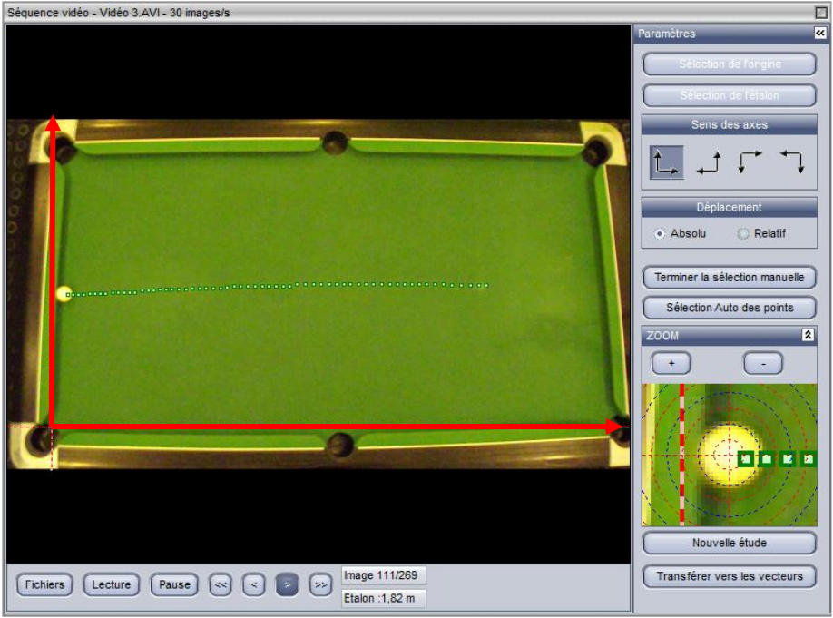
The software's zoom allows for very accurate readings, however, the video has a frame rate of $30$ frames per second, so the ball only moves a few pixels between frames. The plot of the speed evolution on Excel is then rather chaotic. I then measured the position of the ball every $5$ images, to see a linear evolution of the speed, with a deceleration of $0.17$ $m.s^{-2}$, and an uncertainty on this deceleration of $0.044$ $m.s^{-2}$ obtained by the method of least squares :
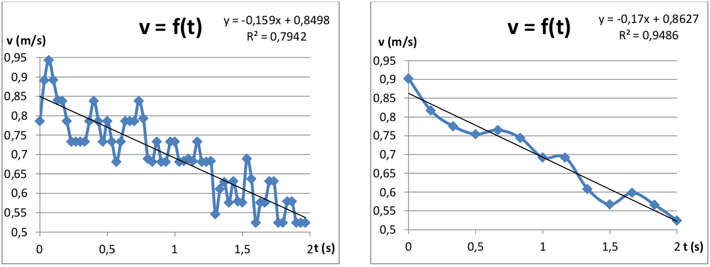
$$a = -0,170 \pm 0,044 \ m.s^{-2}$$
We are now moving on to the theoretical study to justify this constant deceleration, as well as the movement of the balls during the rebounds on the belts and during the shocks between balls.
When considering rigid bands, bounces follow Descartes' law of reflection, analogous to light rays in optics.
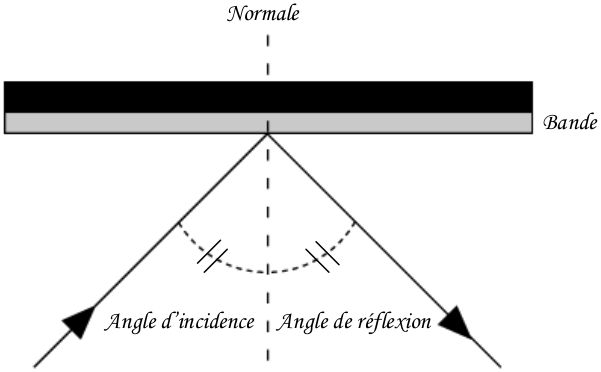
Under the hypothesis of balls evolving without effect, the shocks between balls are governed by the laws of elastic shocks, i.e. conservation of the quantity of motion and kinetic energy :
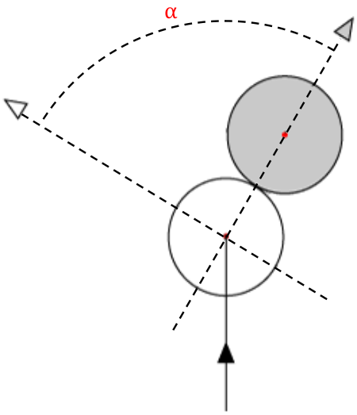
$$\overrightarrow{p_1} = \overrightarrow{p_1'} + \overrightarrow{p_2'}$$
$$\frac{1}{2}mv_1^2 = \frac{1}{2}mv_1'^2 + \frac{1}{2}mv_2'^2$$
This involves deflecting the balls along paths forming an angle $\alpha = 90°$.
Finally, as far as friction is concerned, a distinction is theoretically made between two rolling phases. However, we will only be interested in the second phase of rolling without slip, the first phase of rolling with slip taking place only for a negligible period of time. The position of the ball during the rolling phase with slippage is given by the formula:
$$\overrightarrow{OG}(t) = \overrightarrow{OG}(0) + \overrightarrow{v_{/R}}(G, 0)t - \frac{\overrightarrow{v_{/R}}(I, 0)}{||\overrightarrow{v_{/R}}(I, 0)||} \frac{fgt^2}{2}$$
It is shown with the fundamental principle of dynamics and the theorem of the kinetic moment that, since the ball is rolling without slipping, one cannot neglect the force of resistance to the advance due to the sinking of the ball into the belt:
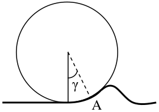
$$\overrightarrow{F} = -f_cmg\frac{\overrightarrow{v_{/R}}(G)}{||\overrightarrow{v_{/R}}(G)||}$$
Régis Petit, engineer-researcher, tells us in his Théorie du jeu sur le billard that this force is opposed to speed, and proportional to a coefficient $f_c$ :
$$f_c = \frac{\sin(\gamma)}{0.4 + \cos(\gamma)}$$
A good approximation of this coefficient is obtained by measuring the time $t$ taken by the ball to travel the $L$ length of the billiard table, arriving at this $L$ length at zero speed:
$$f_c \approx \frac{2L}{gt^2}$$
For our experimental billiard table, it takes $5.5$ $s$ to the ball to go through the $1.82$ $m$ arriving at zero speed, which corresponds to an angle $\gamma = 1°$ and a coefficient $f_c = 1.25\%$. These results are consistent since billiards are designed so that friction is as negligible as possible.
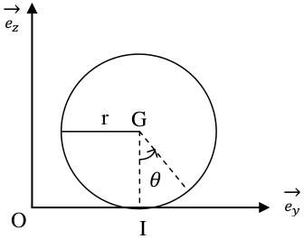
Now that we know the laws governing the movement of marbles, we will be able to make computer programs that will show us the perfect trajectories to pocket a marble.
*In order to propose predictable and easily achievable trajectories on a real billiard game, we consider that only the cue ball moves, only bouncing, and $2$ maximum. When it hits the colored ball that we want to pocket, the colored ball goes directly into the hole without rebounding.*
As a first step, we need to carry out programs that trace the billiard table, the balls and the trajectories, so that we can check the proper functioning of our future programs.
The main plotting program I have made is a program that takes as argument a number $n$, randomly plots $n$ balls on the billiard table, and returns the list of coordinates of the balls. A function traces the trajectory passing through a given position, and another function traces the trajectory after a bounce on a strip according to Descartes' law. These two functions return the coordinates of the impact of the balls on the boards.
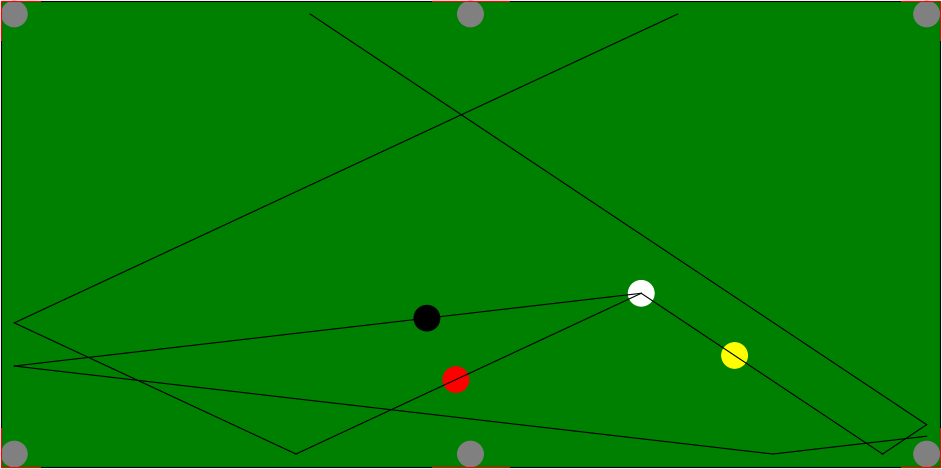
Once these functions were completed, I first looked at where to hit a ball so that it would go into a hole. The elastic shock hypothesis implies that if the colored ball is stationary, there is a single shock position that allows the ball to be pocketed in a given hole. This position is defined by the relations presented here, knowing that at the moment of impact, the two balls and the hole must be aligned:
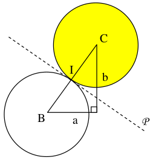
$$a^2 + b^2 = 4R^2 \text{ and } m = \frac{y_C - y_B}{x_C - x_B} = \frac{b}{a}$$
Since we know the coordinates of the colored ball and the holes, we can determine $m$, then deduce $a$ and $b$ which define the coordinates of the shock position :
$$b = m \cdot a \text{ and } a = \pm \frac{2R}{\sqrt{1 + m^2}}$$
We can then realize a function which, taking as argument the coordinates of a ball, returns the coordinates of the $6$ hit positions corresponding to the $6$ holes of the billiard table, and draws these positions on the graphical interface.
We then have to see if these positions are accessible or not, i.e. if they can be reached in $2$ maximum rebounds.
In direct shooting, the trajectory is simply a segment delimited by the cue ball and the cue position. With one or two rebounds on parallel stripes, i.e. like this or like that, any position on the billiard table is accessible.
In two bounces on perpendicular strips, on the other hand, like this for example, the whole billiard table is not accessible. Indeed, in this configuration, it is impossible with the cue ball to reach the black ball by a bounce on this cushion and then on the black ball. It is thus necessary to define a function which makes it possible to determine the zone of the billiard table accessible in $2$ rebounds on $2$ given perpendicular strips, while avoiding the rebounds in the holes.
This zone is delimited by a limit trajectory, which corresponds to the trajectory where the ball bounces as close as possible to the hole. The function then returns the coordinates of the segment that delimits this zone.
We will then use this segment to determine whether the cue ball positions are accessible. By transforming this segment into a vector and normalizing it, we will create a new orthonormal base:
$$\left(O', \ \overrightarrow{x'}, \ \overrightarrow{y'}\right) = \left(B, \ \frac{\overrightarrow{BC}}{||\overrightarrow{BC}||}, \ \frac{\overrightarrow{BD}}{||\overrightarrow{BD}||}\right)$$
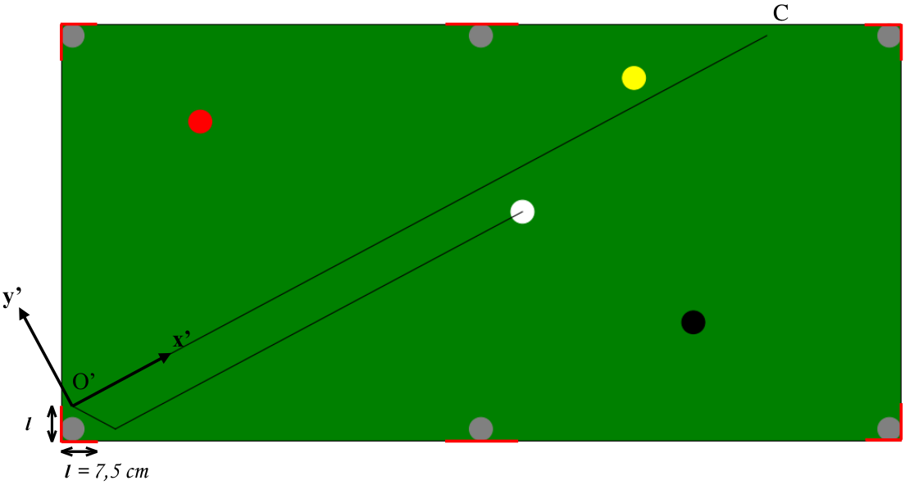
The following base change matrix is then defined:
$$ P = \frac{1}{||\overrightarrow{BC}||} \begin{pmatrix} x_{\overrightarrow{BC}} & -y_{\overrightarrow{BC}} \\ y_{\overrightarrow{BC}} & x_{\overrightarrow{BC}} \end{pmatrix}$$
Then a function is created that returns the coordinates of the shock positions in the new base. If a position is accessible, the $y'$ coordinate of this position will then be positive in this example.
We can then determine the trajectory to be taken in two rebounds thanks to Thales' theorem by unfolding the triangles formed by the trajectory to be taken.
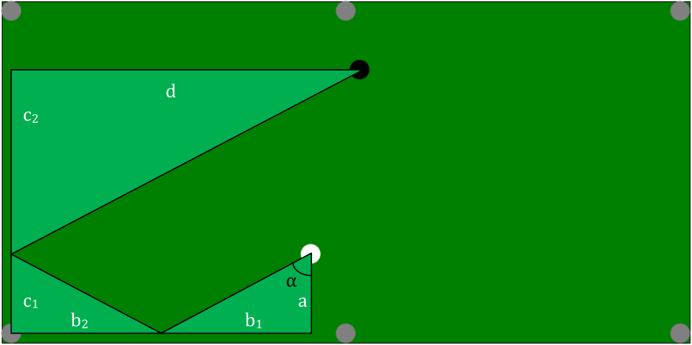
$$\frac{a}{c} = \frac{b_1}{b_2 + d} \iff b_1 = \frac{a(b + d)}{a + c}$$
$$\alpha = arctan\left(\frac{b + d}{a + c}\right)$$
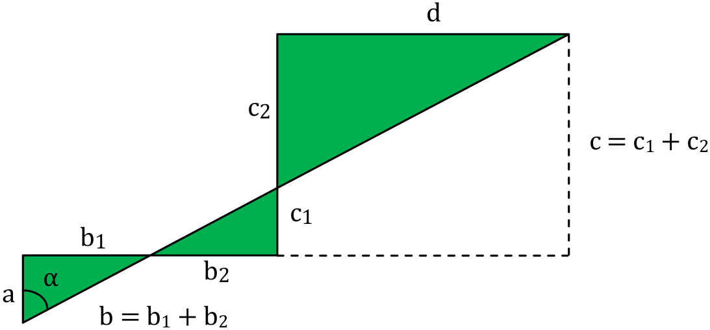
Since we know the coordinates of the cue ball and the cue position, thus the parameters $a$, $b$, $c$ and $d$, we can determine the angle to be given to the cue ball. The formula is presented here for $2$ rebounds, but it is analogous for $3$ rebounds or more.
Now that we have determined all the trajectories to pocket a ball in $2$ maximum rebound, we must eliminate the trajectories that are unattainable, i.e. those where balls or holes are present on the trajectory.
In order to detect the balls present on the trajectory, basic changes are made again with the $x$-axis of the trajectory taken. A log is present on the path if the absolute value of its ordinate in the new base is less than twice the radius, i.e. $5$ $cm$ :
$$x' \geq 0 \text{ and } |y'| < 2R$$
To eliminate rebound paths in the hole areas, simply define conditions on the abscissa and ordinate side of the rebound positions. The final program then plots the achievable paths on the GUI.
However, we have not yet taken into account the deceleration of the balls during movement, which is an important parameter. Indeed, a cue ball sent too softly will not reach its goal, and a ball going too fast will not check the reflection law during rebounds, and therefore will not reach its goal either. It is therefore necessary to calculate the minimum initial speed necessary to pocket a ball.
By considering a linear decrease of the cue ball velocity as determined experimentally with $a = 0.17$ $m.s^{-2}$, we know its velocity as a function of time and its position by integration :
$$v(t) = v_0 - at$$
$$x(t) = x_0 + v_0t - a\frac{t^2}{2}$$
At the moment $t_1$, the ball will have travelled a distance of $x_1$ to bounce against a strip :
$$x_1 = v_0t_1 - a\frac{t_1^2}{2} \qquad \Longrightarrow \qquad t_1 = \frac{v_0 - \sqrt{v_0^2 - 2ax_1}}{a}$$
We then know the speed just before the bounce, then just after, considering that the ball starts again with a certain percentage $\eta = 0.8$ of its speed. In the same way, because of the angle between the balls during the impact, only a percentage $\beta$ of the speed of the cue ball is transmitted to the colored ball.
$$v_{1, ap} = \eta v_{1, av} = \eta(v_0 - at_1) = \eta \sqrt{v_0^2 - 2ax_1}$$
We then obtain by recurrence the final speed of the ball after $n$ rebounds or shocks according to the initial speed :
$$v_n = \left(v_0^2 \prod_{i = 1}^n \eta_i^2 - 2a \sum_{i = 1}^{n + 1} x_i \prod_{j = i}^n \eta_j^2\right)^{\frac{1}{2}}$$
We then define the minimum initial speed to be given to the cue ball, which is obtained when the colored ball is pocketed at zero speed :
$$ v_n = 0 \iff v_0 = \left(\frac{2a \sum_{i = 1}^{n + 1} x_i \prod_{j = i}^n \eta_j^2}{\prod_{i = 1}^n \eta_i^2}\right)^{\frac{1}{2}} $$
Finally, in order for the cue ball to respect Descartes' law of reflection, we define a maximum initial velocity of $2$ $m.s^{-1}$. We then add the formula of the initial velocity in the final program so that it calculates the minimum initial velocity required. If this speed is greater than the maximum initial speed, the move corresponding to the trajectory is considered to be unfeasible. Otherwise, the trajectory is plotted in orange.
Thus, to answer the initial problem, namely "how to pocket a billiard ball for sure", we can first of all notice that the cue ball must be sent at medium speed, because then Descartes' law of reflection makes it possible to easily determine the possible trajectories to pocket a ball.
It should be remembered that the whole study is carried out under the hypothesis of balls moving without effect. Therefore the initial shot plays an essential role, because if one gives effect to the ball, the trajectories are parabolic and therefore the laws of reflection and elastic shocks are no longer valid at all.